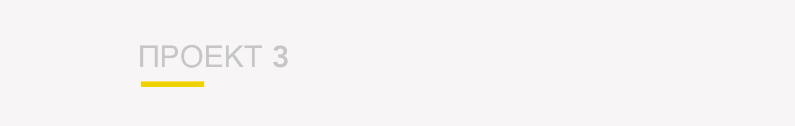

Шанхайская башня
Шанхайская башня — сверхвысокое здание в районе Пудун города Шанхай в Китае. Высота здания составляет 632 метра, общая площадь — 380 тыс. м². Рядом с небоскребом стоят башня Цзинь Мао и Шанхайский всемирный финансовый центр. 3 августа 2013 года здание Шанхайской башни было достроено до уровня крыши. В августе 2014 были закончены внешние работы и началась внутренняя отделка. По завершении строительства в 2015 году оно стало высочайшим зданием в Шанхае, первым по высоте в Китае и третьим в мире свободно стоящим сооружением, после башни Небесное дерево Токио (634 м) и Бурдж Халифа (828 м) в Дубае. В 2016 году его должен был обогнать строящийся Международный финансовый центр Пинань в городе Шэньчжэнь, но в последний момент его высота была уменьшена до 600 м. Здание находится в центральном деловом районе города Шэньчжэня Футиан. Участок размером 18 931 м², был куплен группой Ping An через аукцион по цене 1,66 млрд юаней 6 ноября 2007 года. Первый камень в фундамент был заложен 29 августа 2009 года, и строительство началось в ноябре. 15 марта 2013 года процесс строительства был приостановлен по подозрению в использовании бетона, изготовленного из необработанного морского песка, который может привести к коррозии стали конструкций. Строительство возобновились после того, как прошло тестирование образцов.